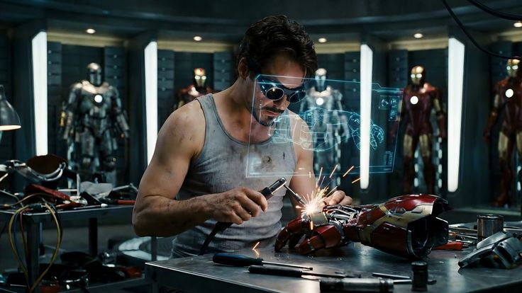
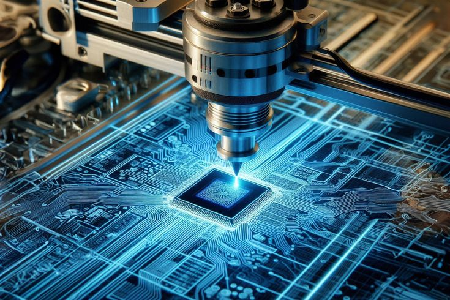
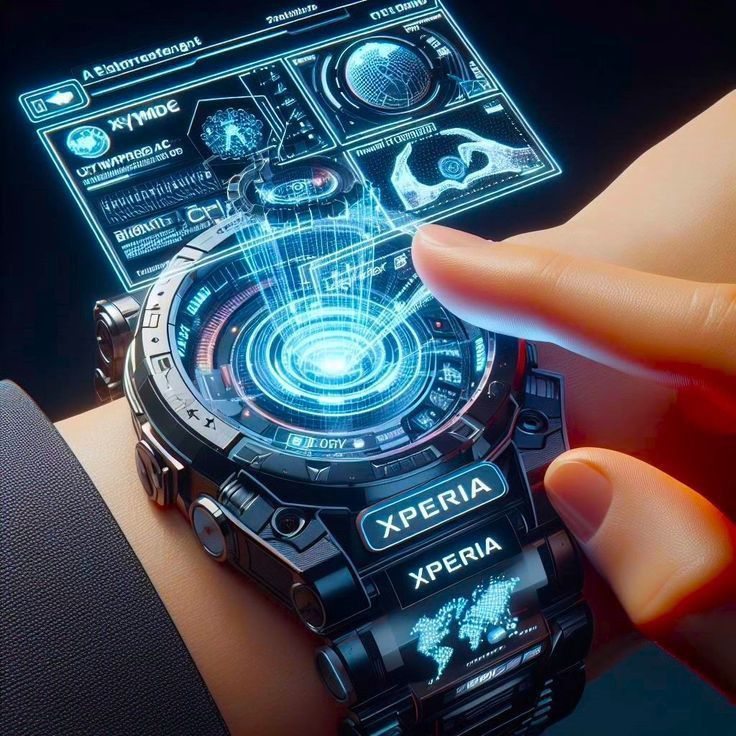
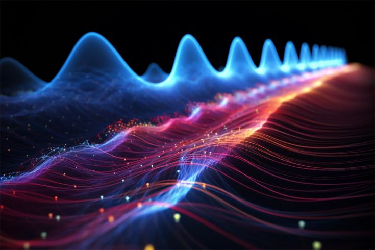

Conheça as tecnologias de ponta por trás das maiores inovações tecnológicas de Tony Stark: energia limpa, inteligência artificial avançada e nanotecnologia.

Fonte de energia geradora de Gigawatts por segundo baseada em fusão nuclear limpa e autossustentável.
Sintetizado por Tony Stark para substituir o paládio por um isótopo não tóxico de altíssima densidade energética.
Matriz de projeção de repulsores concentrados diretamente do peito como sistema de energia e defesa primária.
Sistemas e inovações tecnológicas que sustentam o ecossistema do Homem de Ferro.

Nanobôs autorreplicantes capazes de se moldar instantaneamente em ferramentas, escudos e estruturas complexas.
Assistentes virtuais holográficos com capacidade preditiva, análise biomecânica e controle de sistemas em tempo real.

Projeção tridimensional interativa permitindo manipulação de modelos CAD e simulações físicas no ar.

Conversores de energia de múons em empuxo direcionado sem necessidade de combustível fóssil.
| Sistema | Função Principal | Descrição de Hardware / Protocolo |
|---|---|---|
| J.A.R.V.I.S. | Assistente Primário | Just A Rather Very Intelligent System — Gestão da Stark Tower e trajes iniciais. |
| F.R.I.D.A.Y. | Interface Tática | Interface tática de substituição focada em combate avançado e análise de ameaças. |
| E.D.I.T.H. | Defesa Global | Rede de satélites táticos, controle de drones e segurança cibernética global. |
| Projeção Neural | Binomially Augmented Retro-Framing — Alteração visual de memórias via prótese neural. |